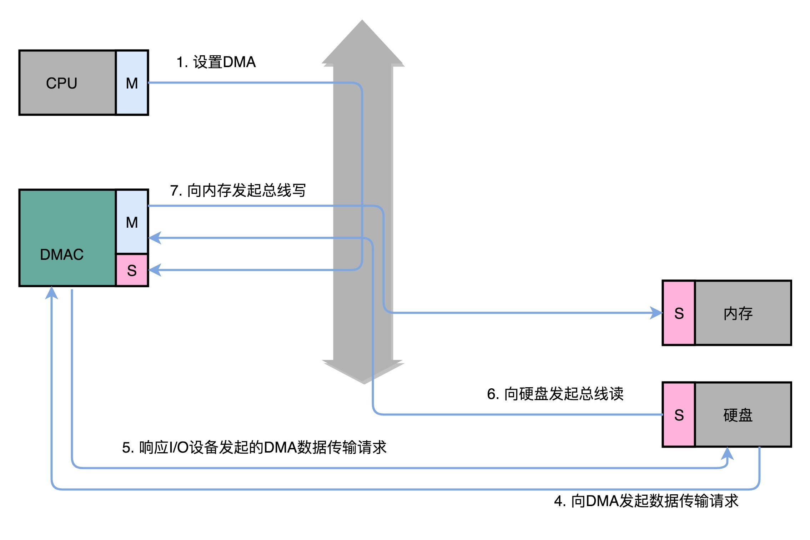
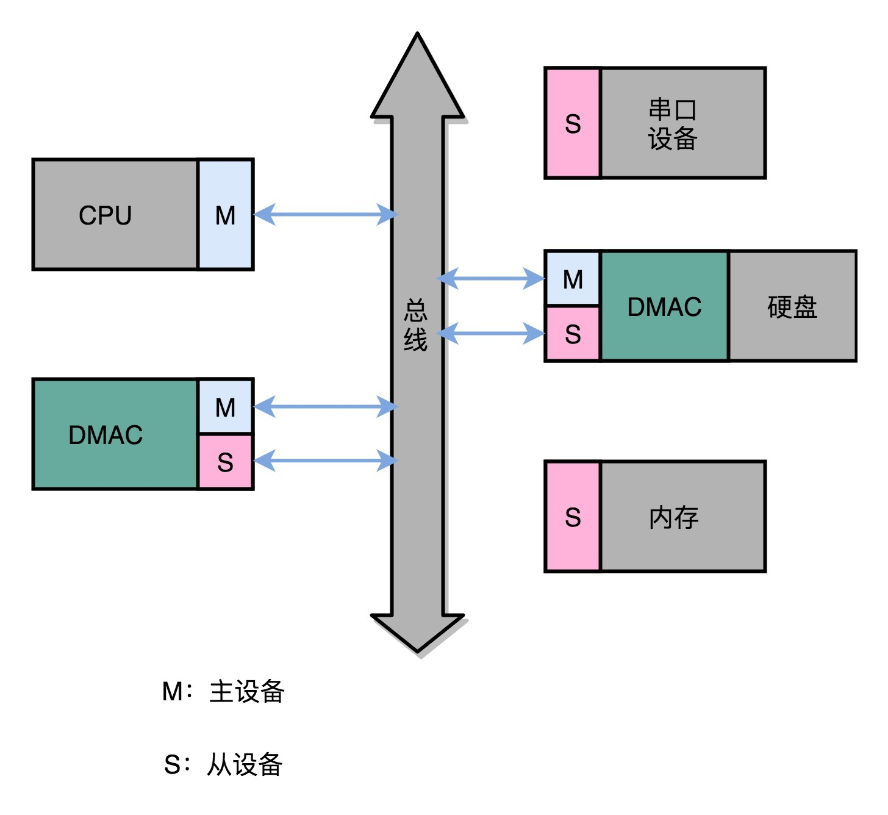
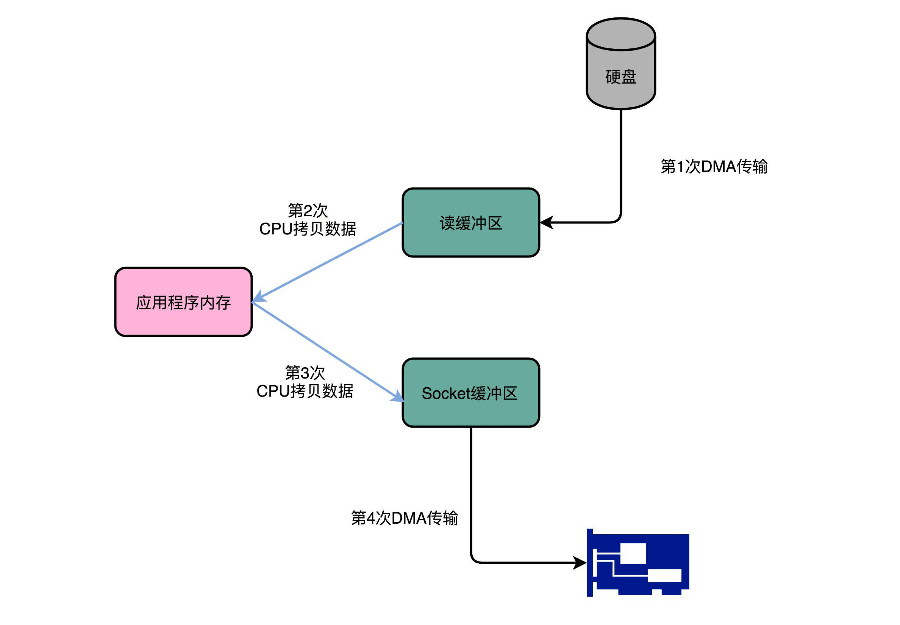
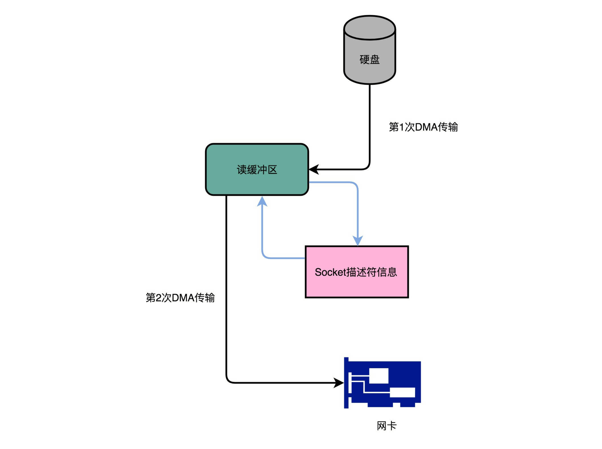

- 00 开篇词 为什么你需要学习计算机组成原理？.md.html
- 01 冯·诺依曼体系结构：计算机组成的金字塔.md.html
- 02 给你一张知识地图，计算机组成原理应该这么学.md.html
- 03 通过你的CPU主频，我们来谈谈“性能”究竟是什么？.md.html
- 04 穿越功耗墙，我们该从哪些方面提升“性能”？.md.html
- 05 计算机指令：让我们试试用纸带编程.md.html
- 06 指令跳转：原来if...else就是goto.md.html
- 07 函数调用：为什么会发生stack overflow？.md.html
- 08 ELF和静态链接：为什么程序无法同时在Linux和Windows下运行？.md.html
- 09 程序装载：“640K内存”真的不够用么？.md.html
- 10 动态链接：程序内部的“共享单车”.md.html
- 11 二进制编码：“手持两把锟斤拷，口中疾呼烫烫烫”？.md.html
- 12 理解电路：从电报机到门电路，我们如何做到“千里传信”？.md.html
- 13 加法器：如何像搭乐高一样搭电路（上）？.md.html
- 14 乘法器：如何像搭乐高一样搭电路（下）？.md.html
- 15 浮点数和定点数（上）：怎么用有限的Bit表示尽可能多的信息？.md.html
- 16 浮点数和定点数（下）：深入理解浮点数到底有什么用？.md.html
- 17 建立数据通路（上）：指令加运算=CPU.md.html
- 18 建立数据通路（中）：指令加运算=CPU.md.html
- 19 建立数据通路（下）：指令加运算=CPU.md.html
- 20 面向流水线的指令设计（上）：一心多用的现代CPU.md.html
- 21 面向流水线的指令设计（下）：奔腾4是怎么失败的？.md.html
- 22 冒险和预测（一）：hazard是“危”也是“机”.md.html
- 23 冒险和预测（二）：流水线里的接力赛.md.html
- 24 冒险和预测（三）：CPU里的“线程池”.md.html
- 25 冒险和预测（四）：今天下雨了，明天还会下雨么？.md.html
- 26 Superscalar和VLIW：如何让CPU的吞吐率超过1？.md.html
- 27 SIMD：如何加速矩阵乘法？.md.html
- 28 异常和中断：程序出错了怎么办？.md.html
- 29 CISC和RISC：为什么手机芯片都是ARM？.md.html
- 30 GPU（上）：为什么玩游戏需要使用GPU？.md.html
- 31 GPU（下）：为什么深度学习需要使用GPU？.md.html
- 32 FPGA、ASIC和TPU（上）：计算机体系结构的黄金时代.md.html
- 33 解读TPU：设计和拆解一块ASIC芯片.md.html
- 34 理解虚拟机：你在云上拿到的计算机是什么样的？.md.html
- 35 存储器层次结构全景：数据存储的大金字塔长什么样？.md.html
- 36 局部性原理：数据库性能跟不上，加个缓存就好了？.md.html
- 37 理解CPU Cache（上）：“4毫秒”究竟值多少钱？.md.html
- 38 高速缓存（下）：你确定你的数据更新了么？.md.html
- 39 MESI协议：如何让多核CPU的高速缓存保持一致？.md.html
- 40 理解内存（上）：虚拟内存和内存保护是什么？.md.html
- 41 理解内存（下）：解析TLB和内存保护.md.html
- 42 总线：计算机内部的高速公路.md.html
- 43 输入输出设备：我们并不是只能用灯泡显示“0”和“1”.md.html
- 44 理解IO_WAIT：IO性能到底是怎么回事儿？.md.html
- 45 机械硬盘：Google早期用过的“黑科技”.md.html
- 46 SSD硬盘（上）：如何完成性能优化的KPI？.md.html
- 47 SSD硬盘（下）：如何完成性能优化的KPI？.md.html
- 48 DMA：为什么Kafka这么快？.md.html
- 49 数据完整性（上）：硬件坏了怎么办？.md.html
- 50 数据完整性（下）：如何还原犯罪现场？.md.html
- 51 分布式计算：如果所有人的大脑都联网会怎样？.md.html
- 52 设计大型DMP系统（上）：MongoDB并不是什么灵丹妙药.md.html
- 53 设计大型DMP系统（下）：SSD拯救了所有的DBA.md.html
- 54 理解Disruptor（上）：带你体会CPU高速缓存的风驰电掣.md.html
- 55 理解Disruptor（下）：不需要换挡和踩刹车的CPU，有多快？.md.html
- 结束语 知也无涯，愿你也享受发现的乐趣.md.html
48 DMA：为什么Kafka这么快？
过去几年里，整个计算机产业届，都在尝试不停地提升 I/O 设备的速度。把 HDD 硬盘换成 SSD 硬盘，我们仍然觉得不够快；用 PCI Express 接口的 SSD 硬盘替代 SATA 接口的 SSD 硬盘，我们还是觉得不够快，所以，现在就有了傲腾（Optane）这样的技术。
但是，无论 I/O 速度如何提升，比起 CPU，总还是太慢。SSD 硬盘的 IOPS 可以到 2 万、4 万，但是我们 CPU 的主频有 2GHz 以上，也就意味着每秒会有 20 亿次的操作。
如果我们对于 I/O 的操作，都是由 CPU 发出对应的指令，然后等待 I/O 设备完成操作之后返回，那 CPU 有大量的时间其实都是在等待 I/O 设备完成操作。
但是，这个 CPU 的等待，在很多时候，其实并没有太多的实际意义。我们对于 I/O 设备的大量操作，其实都只是把内存里面的数据，传输到 I/O 设备而已。在这种情况下，其实 CPU 只是在傻等而已。特别是当传输的数据量比较大的时候，比如进行大文件复制，如果所有数据都要经过 CPU，实在是有点儿太浪费时间了。
因此，计算机工程师们，就发明了 DMA 技术，也就是直接内存访问（Direct Memory Access）技术，来减少 CPU 等待的时间。
理解 DMA，一个协处理器
其实 DMA 技术很容易理解，本质上，DMA 技术就是我们在主板上放一块独立的芯片。在进行内存和 I/O 设备的数据传输的时候，我们不再通过 CPU 来控制数据传输，而直接通过DMA 控制器（DMA Controller，简称 DMAC）。这块芯片，我们可以认为它其实就是一个协处理器（Co-Processor）。
DMAC 最有价值的地方体现在，当我们要传输的数据特别大、速度特别快，或者传输的数据特别小、速度特别慢的时候。
比如说，我们用千兆网卡或者硬盘传输大量数据的时候，如果都用 CPU 来搬运的话，肯定忙不过来，所以可以选择 DMAC。而当数据传输很慢的时候，DMAC 可以等数据到齐了，再发送信号，给到 CPU 去处理，而不是让 CPU 在那里忙等待。
好了，现在你应该明白 DMAC 的价值，知道了它适合用在什么情况下。那我们现在回过头来看。我们上面说，DMAC 是一块“协处理器芯片”，这是为什么呢？
注意，这里面的“协”字。DMAC 是在“协助”CPU，完成对应的数据传输工作。在 DMAC 控制数据传输的过程中，我们还是需要 CPU 的。
除此之外，DMAC 其实也是一个特殊的 I/O 设备，它和 CPU 以及其他 I/O 设备一样，通过连接到总线来进行实际的数据传输。总线上的设备呢，其实有两种类型。一种我们称之为主设备（Master），另外一种，我们称之为从设备（Slave）。
想要主动发起数据传输，必须要是一个主设备才可以，CPU 就是主设备。而我们从设备（比如硬盘）只能接受数据传输。所以，如果通过 CPU 来传输数据，要么是 CPU 从 I/O 设备读数据，要么是 CPU 向 I/O 设备写数据。
这个时候你可能要问了，那我们的 I/O 设备不能向主设备发起请求么？可以是可以，不过这个发送的不是数据内容，而是控制信号。I/O 设备可以告诉 CPU，我这里有数据要传输给你，但是实际数据是 CPU 从拉走的，而不是 I/O 设备推给 CPU 的。

不过，DMAC 就很有意思了，它既是一个主设备，又是一个从设备。对于 CPU 来说，它是一个从设备；对于硬盘这样的 IO 设备来说呢，它又变成了一个主设备。那使用 DMAC 进行数据传输的过程究竟是什么样的呢？下面我们来具体看看。
\1. 首先，CPU 还是作为一个主设备，向 DMAC 设备发起请求。这个请求，其实就是在 DMAC 里面修改配置寄存器。
2.CPU 修改 DMAC 的配置的时候，会告诉 DMAC 这样几个信息：
- 首先是源地址的初始值以及传输时候的地址增减方式。 所谓源地址，就是数据要从哪里传输过来。如果我们要从内存里面写入数据到硬盘上，那么就是要读取的数据在内存里面的地址。如果是从硬盘读取数据到内存里，那就是硬盘的 I/O 接口的地址。 我们讲过总线的时候说过，I/O 的地址可以是一个内存地址，也可以是一个端口地址。而地址的增减方式就是说，数据是从大的地址向小的地址传输，还是从小的地址往大的地址传输。
- 其次是目标地址初始值和传输时候的地址增减方式。目标地址自然就是和源地址对应的设备，也就是我们数据传输的目的地。
- 第三个自然是要传输的数据长度，也就是我们一共要传输多少数据。
\3. 设置完这些信息之后，DMAC 就会变成一个空闲的状态（Idle）。
\4. 如果我们要从硬盘上往内存里面加载数据，这个时候，硬盘就会向 DMAC 发起一个数据传输请求。这个请求并不是通过总线，而是通过一个额外的连线。
\5. 然后，我们的 DMAC 需要再通过一个额外的连线响应这个申请。
\6. 于是，DMAC 这个芯片，就向硬盘的接口发起要总线读的传输请求。数据就从硬盘里面，读到了 DMAC 的控制器里面。
\7. 然后，DMAC 再向我们的内存发起总线写的数据传输请求，把数据写入到内存里面。
8.DMAC 会反复进行上面第 6、7 步的操作，直到 DMAC 的寄存器里面设置的数据长度传输完成。
\9. 数据传输完成之后，DMAC 重新回到第 3 步的空闲状态。
所以，整个数据传输的过程中，我们不是通过 CPU 来搬运数据，而是由 DMAC 这个芯片来搬运数据。但是 CPU 在这个过程中也是必不可少的。因为传输什么数据，从哪里传输到哪里，其实还是由 CPU 来设置的。这也是为什么，DMAC 被叫作“协处理器”。

现在的外设里面，很多都内置了 DMAC
最早，计算机里是没有 DMAC 的，所有数据都是由 CPU 来搬运的。随着对于数据传输的需求越来越多，先是出现了主板上独立的 DMAC 控制器。到了今天，各种 I/O 设备越来越多，数据传输的需求越来越复杂，使用的场景各不相同。加之显示器、网卡、硬盘对于数据传输的需求都不一样，所以各个设备里面都有自己的 DMAC 芯片了。
为什么那么快？一起来看 Kafka 的实现原理
了解了 DMAC 是怎么回事儿，那你可能要问了，这和我们实际进行程序开发有什么关系呢？有什么 API，我们直接调用一下，就能加速数据传输，减少 CPU 占用吗？
你还别说，过去几年的大数据浪潮里面，还真有一个开源项目很好地利用了 DMA 的数据传输方式，通过 DMA 的方式实现了非常大的性能提升。这个项目就是Kafka。下面我们就一起来看看它究竟是怎么利用 DMA 的。
Kafka 是一个用来处理实时数据的管道，我们常常用它来做一个消息队列，或者用来收集和落地海量的日志。作为一个处理实时数据和日志的管道，瓶颈自然也在 I/O 层面。
Kafka 里面会有两种常见的海量数据传输的情况。一种是从网络中接收上游的数据，然后需要落地到本地的磁盘上，确保数据不丢失。另一种情况呢，则是从本地磁盘上读取出来，通过网络发送出去。
我们来看一看后一种情况，从磁盘读数据发送到网络上去。如果我们自己写一个简单的程序，最直观的办法，自然是用一个文件读操作，从磁盘上把数据读到内存里面来，然后再用一个 Socket，把这些数据发送到网络上去。
File.read(fileDesc, buf, len);
Socket.send(socket, buf, len);
这段伪代码，来自 IBM Developer Works 上关于 Zero Copy 的文章
在这个过程中，数据一共发生了四次传输的过程。其中两次是 DMA 的传输，另外两次，则是通过 CPU 控制的传输。下面我们来具体看看这个过程。
第一次传输，是从硬盘上，读到操作系统内核的缓冲区里。这个传输是通过 DMA 搬运的。
第二次传输，需要从内核缓冲区里面的数据，复制到我们应用分配的内存里面。这个传输是通过 CPU 搬运的。
第三次传输，要从我们应用的内存里面，再写到操作系统的 Socket 的缓冲区里面去。这个传输，还是由 CPU 搬运的。
最后一次传输，需要再从 Socket 的缓冲区里面，写到网卡的缓冲区里面去。这个传输又是通过 DMA 搬运的。

这个时候，你可以回过头看看这个过程。我们只是要“搬运”一份数据，结果却整整搬运了四次。而且这里面，从内核的读缓冲区传输到应用的内存里，再从应用的内存里传输到 Socket 的缓冲区里，其实都是把同一份数据在内存里面搬运来搬运去，特别没有效率。
像 Kafka 这样的应用场景，其实大部分最终利用到的硬件资源，其实又都是在干这个搬运数据的事儿。所以，我们就需要尽可能地减少数据搬运的需求。
事实上，Kafka 做的事情就是，把这个数据搬运的次数，从上面的四次，变成了两次，并且只有 DMA 来进行数据搬运，而不需要 CPU。
@Override
public long transferFrom(FileChannel fileChannel, long position, long count) throws IOException {
return fileChannel.transferTo(position, count, socketChannel);
}
如果你层层追踪 Kafka 的代码，你会发现，最终它调用了 Java NIO 库里的 transferTo 方法
Kafka 的代码调用了 Java NIO 库，具体是 FileChannel 里面的 transferTo 方法。我们的数据并没有读到中间的应用内存里面，而是直接通过 Channel，写入到对应的网络设备里。并且，对于 Socket 的操作，也不是写入到 Socket 的 Buffer 里面，而是直接根据描述符（Descriptor）写入到网卡的缓冲区里面。于是，在这个过程之中，我们只进行了两次数据传输。

第一次，是通过 DMA，从硬盘直接读到操作系统内核的读缓冲区里面。第二次，则是根据 Socket 的描述符信息，直接从读缓冲区里面，写入到网卡的缓冲区里面。
这样，我们同一份数据传输的次数从四次变成了两次，并且没有通过 CPU 来进行数据搬运，所有的数据都是通过 DMA 来进行传输的。
在这个方法里面，我们没有在内存层面去“复制（Copy）”数据，所以这个方法，也被称之为零拷贝（Zero-Copy）。
IBM Developer Works 里面有一篇文章，专门写过程序来测试过在同样的硬件下，使用零拷贝能够带来的性能提升。我在这里放上这篇文章链接。在这篇文章最后，你可以看到，无论传输数据量的大小，传输同样的数据，使用了零拷贝能够缩短 65% 的时间，大幅度提升了机器传输数据的吞吐量。想要深入了解零拷贝，建议你可以仔细读一读这篇文章。
总结延伸
讲到这里，相信你对 DMA 的原理、作用和效果都有所理解了。那么，我们一起来回顾总结一下。
如果我们始终让 CPU 来进行各种数据传输工作，会特别浪费。一方面，我们的数据传输工作用不到多少 CPU 核心的“计算”功能。另一方面，CPU 的运转速度也比 I/O 操作要快很多。所以，我们希望能够给 CPU“减负”。
于是，工程师们就在主板上放上了 DMAC 这样一个协处理器芯片。通过这个芯片，CPU 只需要告诉 DMAC，我们要传输什么数据，从哪里来，到哪里去，就可以放心离开了。后续的实际数据传输工作，都会有 DMAC 来完成。随着现代计算机各种外设硬件越来越多，光一个通用的 DMAC 芯片不够了，我们在各个外设上都加上了 DMAC 芯片，使得 CPU 很少再需要关心数据传输的工作了。
在我们实际的系统开发过程中，利用好 DMA 的数据传输机制，也可以大幅提升 I/O 的吞吐率。最典型的例子就是 Kafka。
传统地从硬盘读取数据，然后再通过网卡上向外发送，我们需要进行四次数据传输，其中有两次是发生在内存里的缓冲区和对应的硬件设备之间，我们没法节省掉。但是还有两次，完全是通过 CPU 在内存里面进行数据复制。
在 Kafka 里，通过 Java 的 NIO 里面 FileChannel 的 transferTo 方法调用，我们可以不用把数据复制到我们应用程序的内存里面。通过 DMA 的方式，我们可以把数据从内存缓冲区直接写到网卡的缓冲区里面。在使用了这样的零拷贝的方法之后呢，我们传输同样数据的时间，可以缩减为原来的 1/3，相当于提升了 3 倍的吞吐率。
这也是为什么，Kafka 是目前实时数据传输管道的标准解决方案。
推荐阅读
学完了这一讲之后，我推荐你阅读一下 Kafka 的论文，Kakfa:a Distrubted Messaging System for Log Processing.。Kafka 的论文其实非常简单易懂，是一个很好的让你了解系统、日志、分布式系统的入门材料。
如果你想要进一步去了解 Kafka，也可以订阅极客时间的专栏“Kafka 核心技术与实战”。